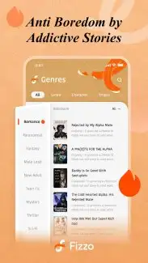

Fizzo 这几年：从阅读器到内容生态的迭代观察
从双端架构、AI 推荐到短剧扩展，看 POLIGON 团队如何把 Fizzo 做成字节跳动海外内容矩阵的关键棋子。
现状：现在的 Fizzo 是什么样
我最近在折腾海外内容分发这条线时，注意到了 Fizzo 这个产品，它的官网上把这款应用的定位说得很清楚。它不是那种单一功能的阅读器——目前这版已经长成了一个相当完整的内容生态：读者端有 AI 个性化推荐、离线下载、短剧视频；创作端有独家/非独家签约体系、版税分成。两端打通，形成闭环。
最显眼的变化是短剧。纯文字阅读还在，但视频内容已经占了相当比例，这在一两年前还是不可想象的。而且短剧和小说共用同一套推荐系统，读了某类小说，推送里会出现同题材的短剧，反之亦然。这种跨形态的内容串联，是 Fizzo 区别于其他阅读类应用的一个关键特征。
还有一个细节：离线下载不仅支持小说文本，短剧视频也能整包存到本地，下载完在移动网络不稳定的海外市场也能继续阅读，这一点的用户粘性比很多人想象的要大。
来路：样本文档没讲的迭代故事
手里的Fizzo文档没有给出具体的版本号和发布时间线，这本身就挺有意思的——POLIGON 团队似乎更在意产品形态而非版本叙事。不过从功能组合里还是能理出一些线索，拼出一个大致的成长轮廓。
起步阶段应该是纯文字阅读器。理由很简单：离线下载、书架管理、翻页体验这些核心功能在样本文档里占的篇幅最多，而且是先于短剧和创作端存在的。字节跳动做海外内容，第一步永远是把"消费端"打透，这是他们在 TikTok 上验证过的路径——先有足够好的内容消费体验，再谈生态。
然后是 AI 推荐系统的接入。这一步是关键转折点——从"我找书"变成"书找我"。样本文档里对推荐原理的描述非常详细，阅读历史、收藏下载、跳过翻页、偏好标签、社交信号……这套信号体系跟字节跳动在今日头条上积累的推荐算法如出一辙。POLIGON 作为字节跳动旗下的团队，直接继承了这套能力，这也是 Fizzo 能在短时间内从红海阅读器里杀出来的核心竞争力。
再然后是创作端。独家/非独家签约、版税分成、作者福利——这些是把"内容供给"拉进来的关键。没有创作者，推荐系统再强也是无源之水。有意思的是两种签约类型都提供版税和福利，区别只是发布权限，这说明 Fizzo 在早期对作者是相对友好的，没有用独家协议卡人。这种宽松的策略帮助它快速积累了一批初始创作者。
最新的增量是短剧。从纯文字扩展到视频，这不仅仅是内容形态的变化，更像是 POLIGON 在验证另一个假设——短剧是不是比小说更适合某些海外市场。印尼市场的深度运营支持能看出一些苗头，这个市场对短剧的接受度特别高，Fizzo 在这里的投入也是倾斜的。

规律：他们一直在死磕什么
从这条隐含的迭代路线看，POLIGON 团队的优先级非常清晰，几件事从头到尾没放松过。
第一，算法推荐永远是基础设施。每一步功能扩展都建立在推荐能力之上——读者端靠推荐拉留存，创作端靠推荐给创作者带流量，短剧也靠推荐分发。字节跳动的基因在这里体现得淋漓尽致，他们做任何内容产品，底层永远是推荐引擎先跑起来，再在上面搭场景。
第二，闭环大于单点。不是做一个最好的阅读器，而是做一个"能拉来作者、能留住读者、能把两边匹配起来"的生态。这是从工具到平台的质变，也是 Fizzo 和 Kindle 之类纯阅读器的根本区别——Kindle 卖的是设备和版权，Fizzo 想做的是内容分发生态。
第三，本地化运营是藏在背后的事。样本文档没提太多运营细节，但从印尼市场的深度支持可以看出，POLIGON 在重点市场做了很多地面工作——不是把中文版简单翻译成英文版就完事的那种。算法可以全球化复用，但内容供给、作者社区、用户习惯，这些必须本地化深耕。
什么一直不管呢？样本文档里没有提到开源社区、第三方接入、或者面向开发者的 API。Fizzo 是一个封闭但完整的体系，不像一些阅读器那样开放给生态。这可能是有意为之——字节跳动的产品哲学里，封闭体系反而更利于推荐算法的精细化调优。
预判：下一步大概率的走向
从这个迭代规律推，我觉得几个方向值得关注。但先说好，这完全是从迭代规律推的，不是官方口径。
短剧的占比可能继续提升。字节跳动在短剧领域已经有成熟经验，把这套能力搬到 Fizzo 上是顺理成章的事。未来甚至可能出现"小说改编短剧"的联动，一本作品在文字和视频两个形态间互相导流，形成内容复用的飞轮。
创作端的扶持力度可能加大。目前的签约体系还算基础，如果 Fizzo 真的要在海外内容市场站稳，可能会推出更多面向创作者的激励计划——比如保底签约、流量倾斜、或者中文市场已经跑通的那些作者运营手段。样本文档里提到的作者福利体系，未来应该会更丰富。
最后，地域扩展。POLIGON 目前重点在印尼，但字节跳动的全球布局决定了 Fizzo 迟早要进入更多市场。那时候，"一刀切"的内容分发可能会变成更精细的区域化运营——不同市场有不同的推荐权重、不同的签约策略、甚至不同的内容形态侧重。
总的来说，Fizzo 的迭代路径很典型：先做透一个消费场景，再用算法建立护城河，然后拉供给端形成闭环，最后扩展形态和地域。每一步都踩得稳，没有大跃进。POLIGON 团队背后是字节跳动的算法能力和全球化经验，这种组合在海外内容市场其实挺少见的。我整理的这份中文资料在 GitHub 上能拿到，国内访问可以走 Gitee 或 GitCode 的镜像。